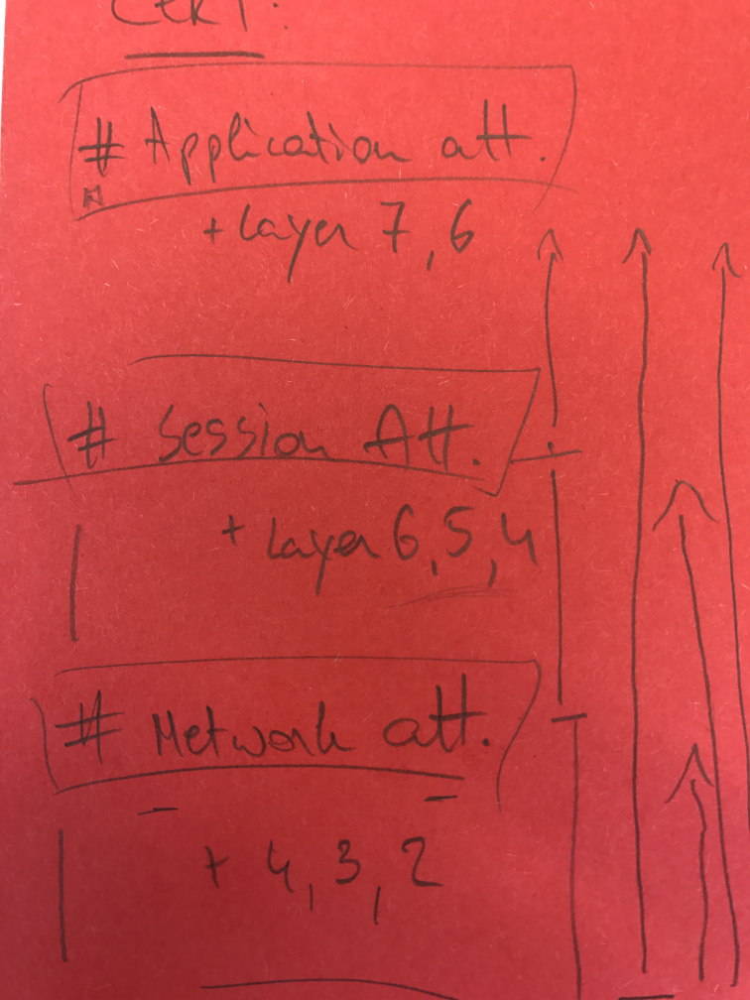

Denial of Service Cheat Sheet¶
Introduction¶
This cheat sheet describes a methodology for handling denial of service (DoS) attacks on different layers. It also serves as a platform for further discussion and analysis, since there are many different ways to perform DoS attacks.
Fundamentals¶
Because anti-DoS methods cannot be one-step solutions, your developers and application/infrastructure architects must develop DoS solutions carefully. They must keep in mind that "availability" is a basic part of the CIA triad.
Remember that if every part of the computing system within the interoperability flow does not function correctly, your infrastructure suffers. A successful DoS attack hinders the availability of instances or objects to a system and can eventually render the entire system inaccessible.
To ensure systems can be resilient and resist a DoS attack, we strongly suggest a thorough analysis on components within your inventory based on functionality, architecture and performance (i.e. application-wise, infrastructure and network related).

This DoS system inventory should look for potential places where DoS attacks can cause problems and highlight any single points of system failures, which can range from programming related errors to resource exhaustion. It should give you a clear picture of what issues are at stake (e.g. bottlenecks, etc.). To resolve problems, a solid understanding of your environment is essential to develop suitable defense mechanisms. These could be aligned with:
- Scaling options (up = inner hardware components, out = the number of complete components).
- Existing conceptual / logical techniques (such as applying redundancy measurements, bulk-heading, etc. - which expands your in-house capabilities).
- A cost analysis applied to your situation.
This document adopts a specific guidance structure from CERT-EU to analyze this subject, which you may need to change depending on your situation. It is not a complete approach but it will help you create fundamental blocks which should be utilized to assist you in constructing anti-DoS concepts fitting your needs.
Analyzing DoS attack surfaces¶
In this cheat sheet, we will use the DDOS classification as documented by CERT-EU to examine DoS system vulnerabilities. It uses the seven OSI model and focuses three main attack surfaces, namely Application, Session and Network.
1) Overview of potential DoS weaknesses¶
It is important to understand that each of these three attack categories needs to be considered when designing a DoS-resilient solution:
Application attacks focus on rendering applications unavailable by exhausting resources or by making it unusable in a functional way.
Session (or protocol) attacks focus on consuming server resources, or resources of intermediary equipment like firewalls and load-balancers.
Network (or volumetric) attacks focus on saturating the bandwidth of the network resource.
Note that OSI model layers 1 and 2 are not included in this categorization, so we will now discuss these layers and how DoS applies to them.
The physical layer consists of the networking hardware transmission technologies of a network. It is a fundamental layer underlying the logical data structures of the higher-level functions in a network. Typical DoS scenarios that involve the physical layer involve system destruction, obstruction, and malfunction. For example, a Georgian elderly woman sliced through an underground cable, resulting in the loss of internet for the whole of Armenia.
The data layer is the protocol layer that transfers data between adjacent network nodes in a wide area network (WAN) or between nodes on the same local area network (LAN) segment. Typical DoS scenarios are MAC flooding (targeting switch MAC tables) and ARP poisoning.
In MAC flooding attacks, a switch is flooded with packets that all have different source MAC addresses. The goal of this attack is to consume the limited memory used by a switch to store the MAC and physical port translation table (MAC table), which causes valid MAC addresses to be purged and forces the switch to enter a fail-over mode where it becomes a network hub. If this occurs, all data is forwarded to all ports, resulting in a data leakage.
[Future additions to sheet: The impact in relation to DoS and document compact remediation]
In ARP poisoning attacks, a malicious actor sends spoofed ARP (Address Resolution Protocol) messages over the wire. If the attacker's MAC address becomes linked to the IP address of a legitimate device on the network, the attacker can intercept, modify or stop data that was intended for the victim IP address. The ARP protocol is specific to the local area network and could cause a DoS on the wire communication.
Packet filtering technology can be used to inspect packets in transit to identify and block offending ARP packets. Another approach is to use static ARP tables but they prove difficult to be maintained.
Application attacks¶
Application layer attacks usually make applications unavailable by exhausting system resources or by making it unusable in a functional way. These attacks do not have to consume the network bandwidth to be effective. Rather they place an operational strain on the application server in such a way that the server becomes unavailable, unusable or non-functional. All attacks exploiting weaknesses on OSI layer 7 protocol stack are generally categorised as application attacks. They are the most challenging to identify/mitigate.
[Future additions to sheet: List all attacks per category. Because we cannot map remediations one on one with an attack vector, we will first need to list them before discussing the action points.]
Slow HTTP attacks deliver HTTP requests very slow and fragmented, one at a time. Until the HTTP request was fully delivered, the server will keep resources stalled while waiting for the missing incoming data. At one moment, the server will reach the maximum concurrent connection pool, resulting in a DoS. From an attacker's perspective, slow HTTP attacks are cheap to perform because they require minimal resources.
Software Design Concepts¶
- Using validation that is cheap in resources first: We want to reduce impact on these resources as soon as possible. More (CPU, memory and bandwidth) expensive validation should be performed afterward.
- Employing graceful degradation: This is a core concept to follow during application design phase, in order to limit impact of DoS. You need to continue some level of functionality when portions of a system or application break. One of the main problems with DoS is that it causes sudden and abrupt application terminations throughout the system. A fault tolerant design enables a system or application to continue its intended operation, possibly at a reduced level, rather than failing completely if parts of the system fails.
- Prevent single point of failure: Detecting and preventing single points of failure (SPOF) is key to resisting DoS attacks. Most DoS attacks assume that a system has SPOFs that will fail due to overwhelmed systems. We suggest that you employ stateless components, use redundant systems, create bulkheads to stop failures from spreading across the infrastructure, and make sure that systems can survive when external services fail. Prevention
- Avoid highly CPU consuming operations: When a DoS attack occurs, operations that tend to use a lot of CPU resources can become serious drags on system performance and can become a point of failure. We strongly suggest that you review performance issues with your code, including problems that are inherent in the languages that you are using. See Java JVM-IBM and Microsoft-IIS
- Handle exceptions: When a DoS attack occurs, it is likely that applications will throw exceptions and it is vital that your systems can handle them gracefully. Again, a DoS attack assumes that an overwhelmed system will not be able to throw exceptions in a way that the system can continue operating. We suggest that you go through your code and make sure that exceptions are handled properly. See Large-Scale-Systems Java and Java
- Protect overflow and underflow Since buffer overflow and underflow often lead to vulnerabilities, learning how to prevent them is key. OWASP Overflow-Underflow-C Overflow
- Threading: Avoid operations which must wait for completion of large tasks to proceed. Asynchronous operations are useful in these situations.
- Identify resource intensive pages and plan ahead.
Session¶
- Limit server side session time based on inactivity and a final timeout: (resource exhaustion) While sessions timeout is most of the time discussed in relation to session security and preventing session hijacking, it is also an important measure to prevent resource exhaustion.
- Limit session bound information storage: The less data is linked to a session, the less burden a user session has on the webserver's performance.
Input validation¶
- Limit file upload size and extensions: This tactic prevents DoS on file space storage or other web application functions which will use the upload as input (e.g. image resizing, PDF creation, etc. (resource exhaustion) - Checklist.
- Limit total request size: To make it harder for resource-consuming DoS attacks to succeed. (resource exhaustion)
- Prevent input based resource allocation: Again, to make it harder for resource-consuming DoS attacks to succeed. (resource exhaustion)
- Prevent input based function and threading interaction: User input can influence how many times a function needs to be executed, or how intensive the CPU consumption becomes. Depending on (unfiltered) user input for resource allocation could allow a DoS scenario through resource exhaustion. (resource exhaustion)
- Input based puzzles like captchas or simple math problems are often used to 'protect' a web form. The classic example is a webform that will send out an email after posting the request. A captcha could then prevent the mailbox from getting flooded by a malicious attacker or spambot. Puzzles serve a purpose against functionality abuse but this kind of technology will not help defend against DoS attacks.
Access control¶
- Authentication as a means to expose functionality: The principle of least privilege can play a key role in preventing DoS attacks by denying attackers the ability to access potentially damaging functions with DoS techniques.
- User lockout is a scenario where an attacker can take advantage of the application security mechanisms to cause DoS by abusing the login failure.
Network attacks¶
For more information on network attacks, see:
[Future additions to cheat sheet: Discuss attacks where network bandwidth gets saturation. Volumetric in nature. Amplification techniques make these attacks effective. List attacks: NTP amplification, DNS amplification, UDP flooding, TCP flooding]
Network Design Concepts¶
- Preventing single point of failure: See above.
- Caching: The concept that data is stored so future requests for that data can be served faster. The more data is served via caching, to more resilient the application becomes to bandwidth exhaustion.
- Static resources hosting on a different domain will reduce the number of http requests on the web application. Images and JavaScript are typical files that are loaded from a different domain.
Rate limiting¶
Rate limiting is the process of controlling traffic rate from and to a server or component. It can be implemented on infrastructure as well as on an application level. Rate limiting can be based on (offending) IPs, on IP block lists, on geolocation, etc.
- Define a minimum ingress data rate with request-read timeouts to mitigate slow HTTP attacks; see Apache's minimum-rate and timeout controls for an example. A minimum rate set too high can reject legitimate slow clients; setting it too low weakens protection against slow senders. Inspect the logs to establish a baseline of genuine traffic rates.
- Define an absolute connection timeout
- Define a maximum ingress data rate limit then drop all connections above that rate.
- Define a total bandwidth size limit to prevent bandwidth exhaustion
- Define a load limit, which specifies the number of users allowed to access any given resource at any given time.
ISP-Level remediations¶
- Filter invalid sender addresses using edge routers, in accordance with RFC 2267, to filter out IP-spoofing attacks done with the goal of bypassing block lists.
- Check your ISP services in terms of DDOS beforehand (support for multiple internet access points, enough bandwidth (xx-xxx Gbit/s) and special hardware for traffic analysis and defense on application level
Global-Level remediations: Commercial cloud filter services¶
- Consider a DDoS filtering service for larger attacks. Assess the provider's mitigation capacity and coverage against your availability requirements; do not assume a fixed attack-size ceiling.
- Filter services support different mechanics to filter out malicious or non compliant traffic
- Comply with relevant data protection/privacy laws - a lot of providers route traffic through USA/UK